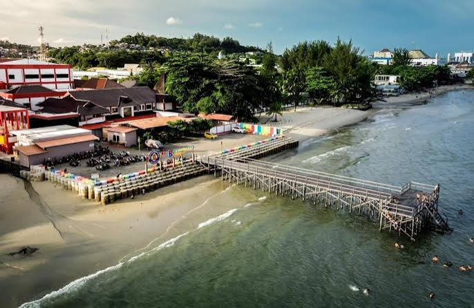
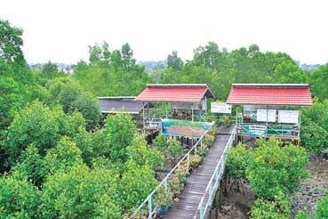
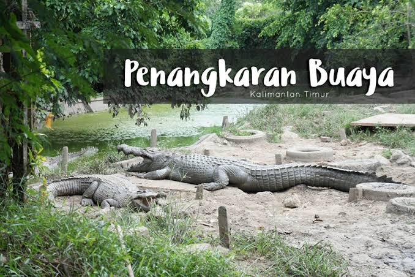

Kepiting Balikpapan
Nikmati kepiting dengan pilihan saus dan bumbu yang kaya rasa.
Jelajahi pantai, hutan mangrove, dan ruang publik yang membuat Balikpapan menarik untuk disinggahi.

Pantai yang dekat dari pusat kota dengan suasana santai; nikmati berjalan di tepi laut saat sore.

Deretan pinus memberi teduh di sepanjang pesisir; gelar piknik santai bersama keluarga di tepi Pantai Lamaru.

Jalur kayu membawa pengunjung melewati rimbun bakau; susuri jembatan mangrove untuk mengamati ekosistem pesisir.

Hamparan pantai luas dengan suasana ceria; bermain air di tepi Pantai Manggar saat cuaca bersahabat.

Kenali satwa reptil dan upaya pelestariannya; ikuti tur edukasi di kawasan penangkaran bersama petugas.
Coba hidangan laut dan sajian lokal yang mencerminkan kekayaan rasa pesisir Kalimantan Timur.
Nikmati kepiting dengan pilihan saus dan bumbu yang kaya rasa.
Kerupuk ikan renyah yang populer sebagai camilan dan buah tangan.
Pisang bakar pipih yang disajikan dengan saus gula merah kental.
Ikan segar bakar dengan sambal dan pelengkap khas kawasan pesisir.